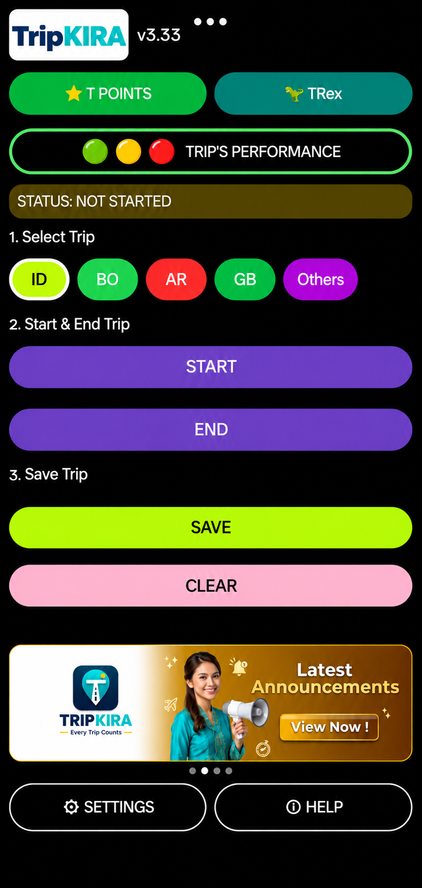
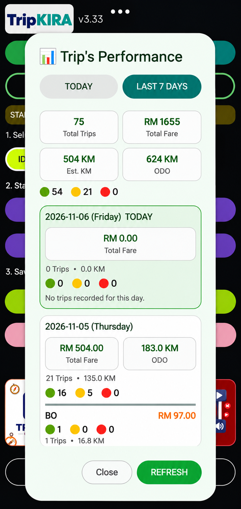
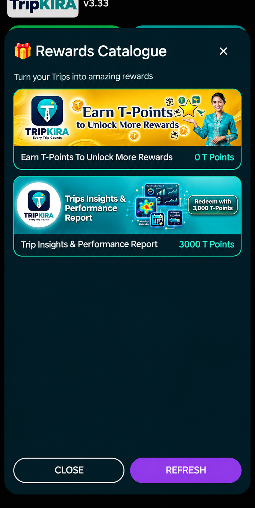
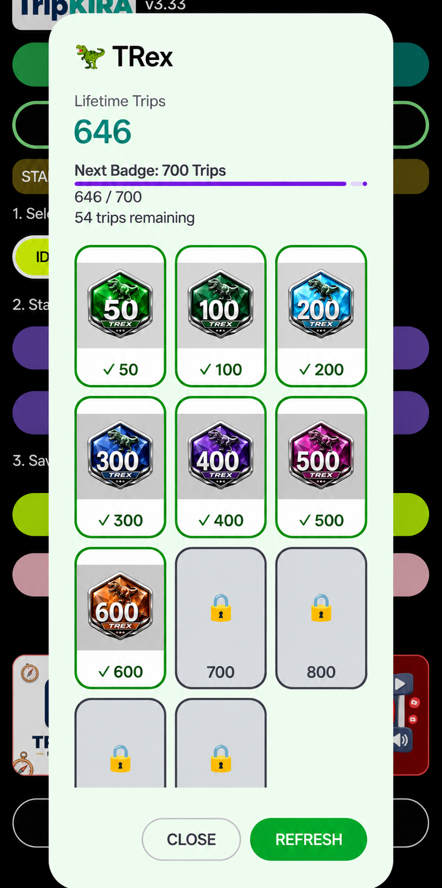
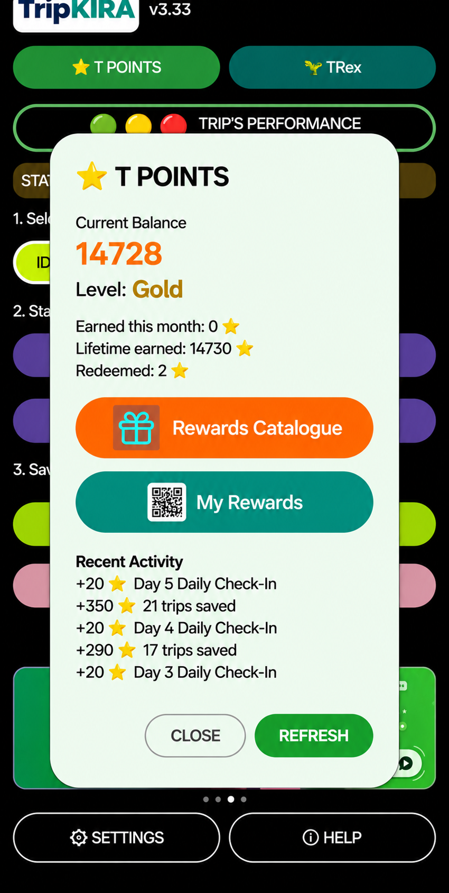
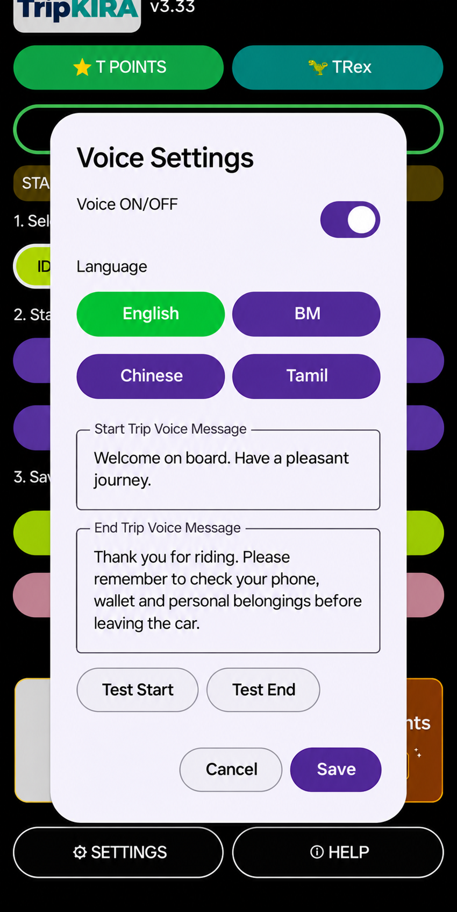

Every Trip Counts
Record your e-hailing trips in one convenient place.
TripKIRA is your trip recorder built for e-hailing drivers. Log each job, earn T-Points, unlock rewards and see which trips are worth your time.

Six practical features designed for your everyday shift.
Record your e-hailing trips in one convenient place.
Earn T-Points through eligible activities and recorded trips.
Understand trip quality using green, yellow and red indicators.
Review trips, fares, kilometres and daily trends.
Use your T-Points to claim available rewards and reports.
Welcome passengers and thank them in your chosen language.
Screenshots from the TripKIRA v3.33 app. Swipe to explore on mobile.





Interested in TripKIRA? Contact our team for the current registration process.
Registration is handled separately. No personal information is collected by this demonstration website.
Explore the app features and get in touch with the TripKIRA team to join.
E-hailing drivers who want to track their trips and understand their driving performance.
Choose the trip platform, tap Start at pickup, tap End after drop-off, then enter the fare and save.
Eligible trip records, check-ins and other qualifying activities can earn T-Points under the current programme rules.
The app shows available rewards, including the Trips Insights & Performance Report. Report access is subject to eligibility and the current redemption process.
YES, it is totally free to use.